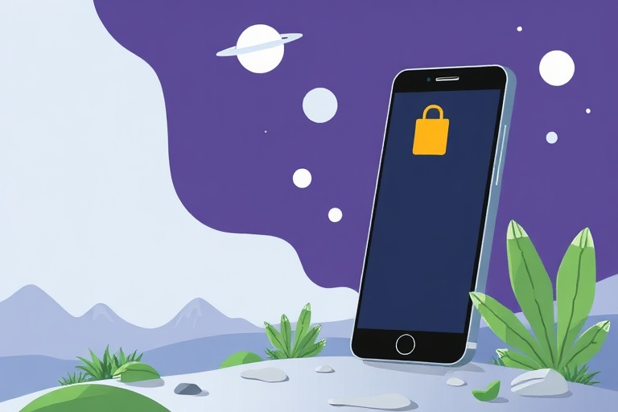

Mastering Android: Essential Tips for Better Privacy and Security
Category: mobile | Language: en
Android is the world's most popular mobile operating system, powering billions of devices from different manufacturers like Samsung, Google, and Motorola. For beginners, the sheer number of settings and icons can be overwhelming, leading many to leave their phones in a "factory default" state. However, taking a few minutes to customize your device can significantly improve your daily experience and, more importantly, protect your personal information. This guide focuses on practical steps to enhance your privacy and streamline how you use your phone, ensuring you stay in control of your digital life without needing to be a tech expert. Note that because different brands use different versions of Android, some menu names might vary slightly, but the search bar at the top of your Settings app will always help you find what you need.
One of the most important concepts for any Android user is "App Permissions." Every time you install an app, it asks for permission to access parts of your phone, such as the camera, microphone, or your contact list. Beginners often click "Allow" on everything just to get the app running, but this can be a major privacy risk. To manage this, go to Settings > Apps > Permission Manager. Here, you can see exactly which apps have access to your sensitive data. A good rule of thumb is to only allow permissions that are absolutely necessary for the app's function—for example, a navigation app like Google Maps needs your location, but a simple calculator app or a basic game definitely does not.
Modern Android versions offer a clever feature called "Approximate Location" to help protect your movements. When an app like a weather tracker asks for your location, you do not always need to give it your exact house address. Instead, you can choose "Approximate" during the initial pop-up, which gives the app a general idea of your city or neighborhood rather than your specific street. To adjust this for apps you already have, navigate to Settings > Location > App Location Permissions. Select an app and toggle between "Precise" or "Approximate." This small change prevents companies from tracking your exact movements throughout the day while still allowing the app to provide relevant regional information, like local forecasts or news.
By default, many Android phones show the full content of your messages and emails on the lock screen. This means anyone who glances at your phone—whether it is sitting on a coffee shop table or a desk at work—can see private information without needing your passcode. To fix this, go to Settings > Notifications > Notifications on Lock Screen. You should select the option that says "Hide sensitive content" or "Show sensitive content only when unlocked." This ensures that while you might see an alert that you have a new message from a friend, the actual text of the message remains hidden until you verify your identity using your fingerprint, face ID, or PIN code.
You do not necessarily need to buy expensive third-party antivirus software for your Android phone because Google provides a built-in security scanner called Google Play Protect. This tool automatically scans all the apps you download from the Play Store for malicious behavior and potential viruses. You can check its status by opening the Google Play Store app, tapping your profile icon at the top right, and selecting "Play Protect." If you see a green checkmark, your device is currently safe. It also warns you about "abandoned" apps that haven't been updated in a long time or those that might be collecting data they shouldn't, acting as a constant silent guardian for your device.
Consider a common scenario: you download a free "Flashlight" or "Live Wallpaper" app from the store. Upon opening it, the app asks for permission to access your contacts, your calendar, and your phone's microphone. This is a major red flag. There is no technical reason a flashlight app needs to know who your friends are or listen to your surroundings. In this situation, the safest action is to deny the permissions and uninstall the app immediately. Often, these seemingly harmless utility apps are just fronts for data-harvesting tools designed to sell your contact list to advertisers. Always ask yourself if the request matches what the app actually does; if it feels wrong, it likely is.
A common mistake beginners make is "sideloading" apps, which means installing them from random websites or third-party stores instead of the official Google Play Store. While this can sometimes provide access to apps not available elsewhere, it bypasses the security checks mentioned earlier. These files, which often end in ".apk," can easily contain hidden malware that steals your banking details or records your passwords. Stick to the official Play Store whenever possible. Additionally, avoid using public, unsecured Wi-Fi at airports or coffee shops for sensitive tasks like mobile banking. If you must use public Wi-Fi, consider using a reputable Virtual Private Network (VPN) to encrypt your connection and keep your data safe from hackers on the same network.
Mastering your Android device does not happen overnight, but prioritizing privacy is the best place to start. By managing permissions, hiding lock screen content, and staying within the safety of the Play Store, you significantly reduce your vulnerability to data leaks and digital scams. These steps are free and require no special technical skills, yet they provide the strongest foundation for a safe mobile experience. Your immediate next step should be to go to your phone's Settings, tap on "Google," and select "Manage your Google Account." From there, run a "Security Checkup" to ensure your recovery email and two-factor authentication are up to date, providing a final layer of protection for your digital life.